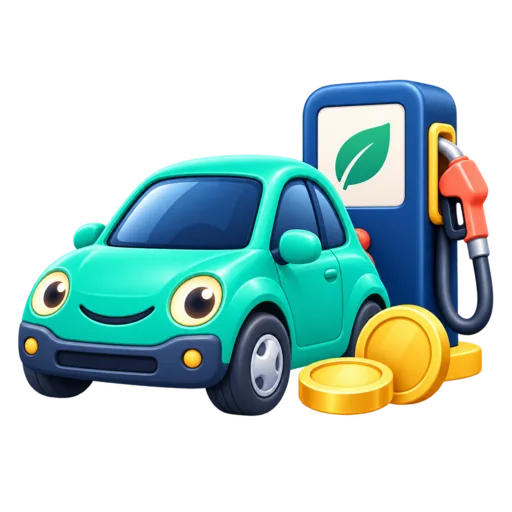

FERRAMENTA GRATUITA
Calculadora de combustível
Descubra quantos litros serão necessários e quanto você vai gastar de combustível em uma viagem.

Estimativa
Como calcular o gasto de combustível em uma viagem
Esta calculadora de combustível estima quantos litros serão necessários para um trajeto e quanto você vai gastar com gasolina, etanol, diesel ou outro combustível. Para fazer o cálculo, basta informar a distância da viagem, o consumo médio do veículo e o preço do combustível.
Como usar a calculadora de combustível
Informe a distância do percurso e escolha se o valor corresponde somente à ida ou se deseja calcular ida e volta. Depois, digite o consumo médio do veículo. No Brasil, a forma mais comum é km por litro (km/L). Por fim, informe o preço por litro do combustível e clique em calcular.
A ferramenta também aceita distância em milhas, consumo em litros a cada 100 km e consumo em milhas por galão dos Estados Unidos (mpg), fazendo as conversões necessárias automaticamente.
Fórmula para calcular litros de combustível
Quando o consumo é informado em km/L, a fórmula é: litros necessários = distância total ÷ consumo médio do veículo.
Para descobrir o gasto, a calculadora utiliza: custo do combustível = litros necessários × preço por litro.
Exemplo prático
Imagine uma viagem de 300 km em um carro que faz 12 km/L, com combustível a R$ 6,20 por litro. O veículo precisará de aproximadamente 25 litros, com custo estimado de R$ 155,00. Para ida e volta pelo mesmo percurso, a distância total será de 600 km, resultando em cerca de 50 litros e R$ 310,00 nas mesmas condições.
Dúvidas frequentes
Como calcular quanto vou gastar de gasolina?
Divida a distância pelo consumo do carro em km/L para descobrir os litros necessários. Depois multiplique os litros
pelo preço da gasolina. A calculadora faz essas duas etapas automaticamente.
Posso calcular gasto com etanol ou diesel?
Sim. A fórmula é a mesma. Informe o consumo médio do veículo com o combustível utilizado e o preço correspondente
por litro.
Como saber quantos km meu carro faz por litro?
O consumo médio pode ser consultado no computador de bordo ou calculado comparando a quilometragem percorrida com a
quantidade abastecida. O valor real pode variar conforme as condições de uso.
O que pode alterar o consumo real?
Trânsito, velocidade, relevo, uso do ar-condicionado, peso transportado, pneus, manutenção do veículo e forma de condução podem fazer o consumo real ficar diferente da estimativa. Por isso, o resultado deve ser usado como referência para planejamento da viagem.
Vai viajar ou trabalhar com outras unidades? Use também o conversor de comprimento para converter quilômetros e milhas ou o conversor de moedas para comparar valores em real, dólar, euro e outras moedas.
Calculadoras relacionadas
Você também pode usar Conversor de Moedas: Dólar, Euro e Real, Conversor de Fuso Horário entre Cidades e Calculadora de Meta de Economia Mensal.